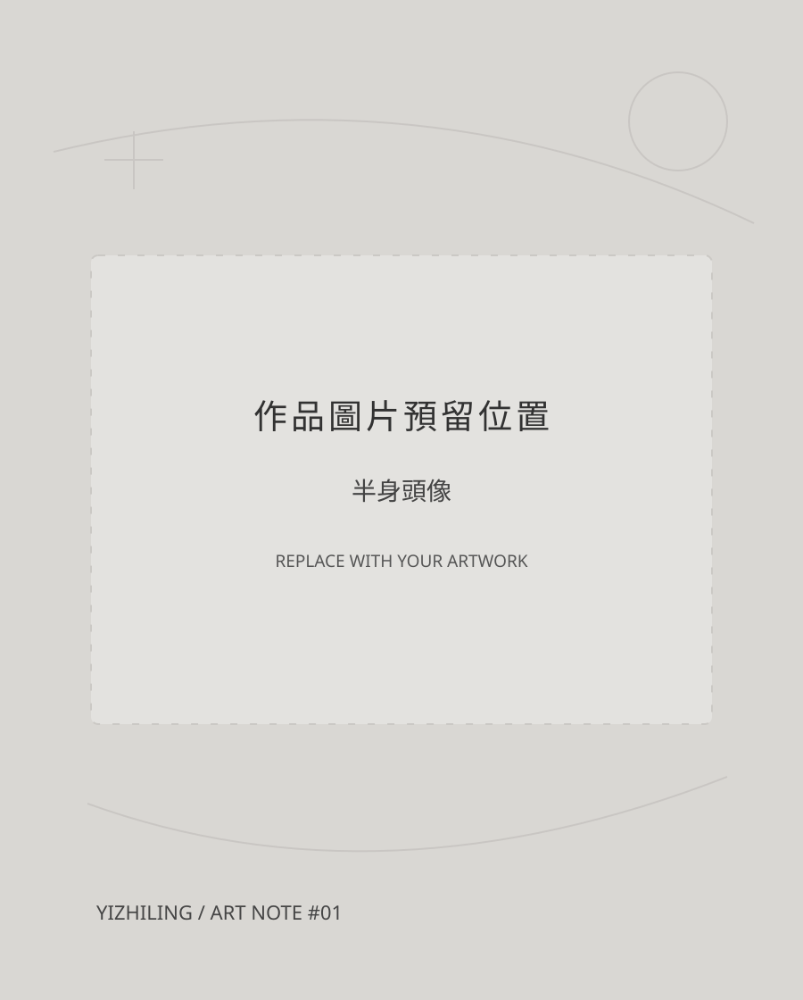
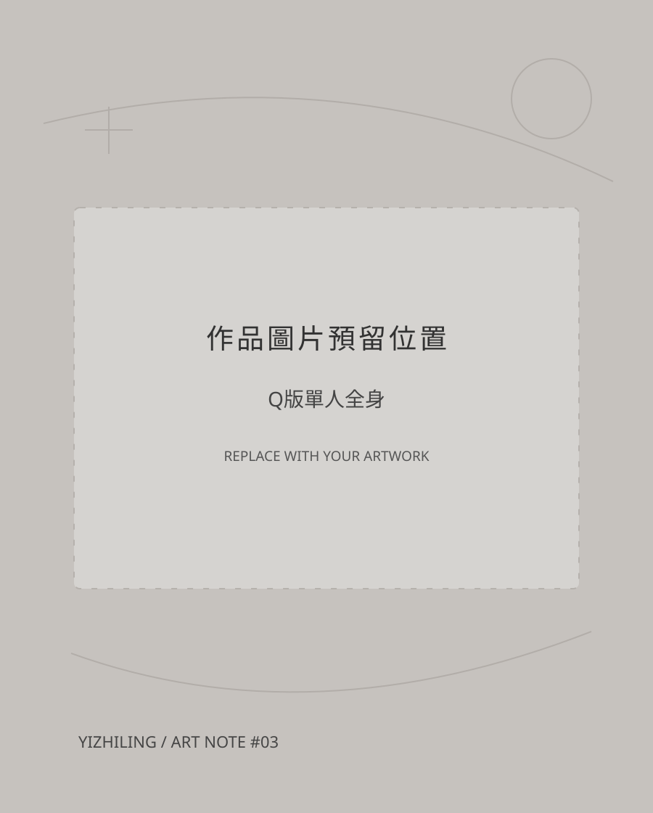
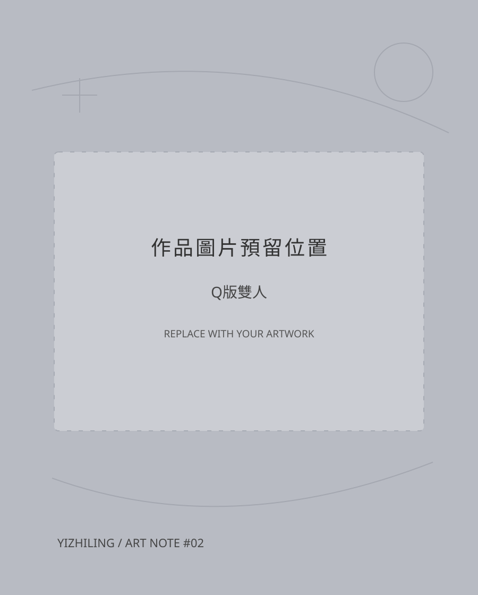
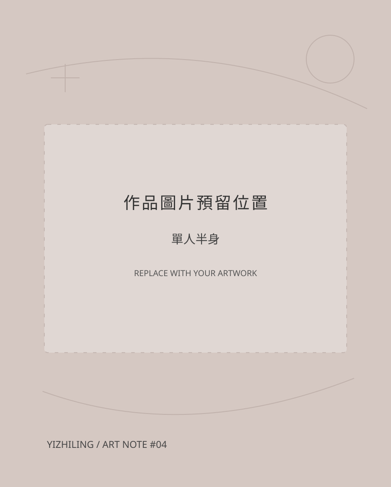

01 / PORTRAIT↗

單人半身頭像
NT$ 300 起
02 / Commission — let's draw something
如果喜歡我的畫風，
歡迎一起把喜歡的角色變成插畫。
01 / Price list

NT$ 300 起

NT$ 350 起

NT$ 500 起

NT$ 700 起
※ 以上為你提供的起始價格；實際委託細節請透過私訊確認。
02 / The process
透過 Facebook 私訊討論委託內容
提供草稿確認
完成匯款
完成作品並交付
修改限制為 2 次。其他尚未提供的付款、交期及授權細則請於委託前私訊確認。